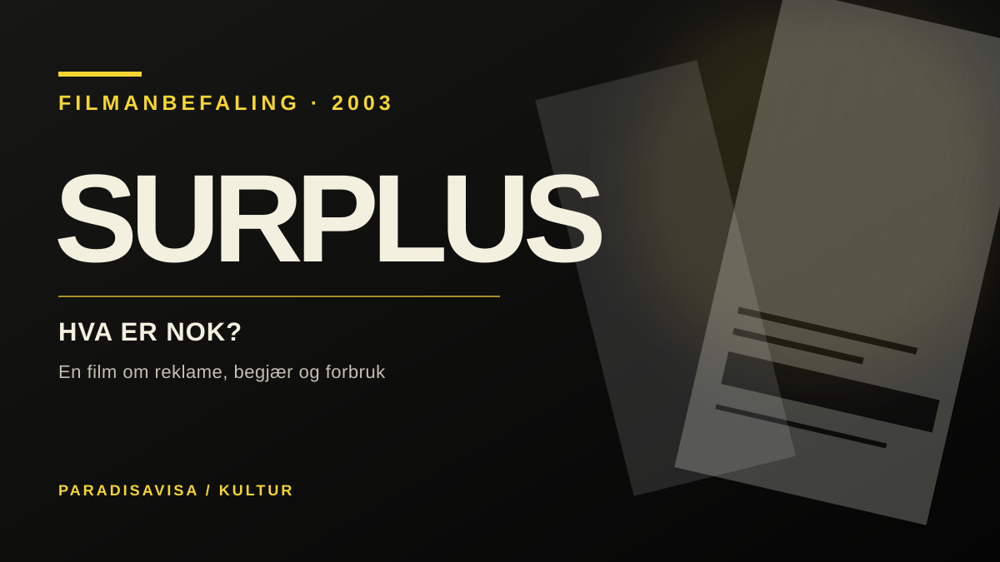

Kultur · Film · Anbefaling
Surplus: Hva om markedet aldri lar oss få nok?
Hvorfor fortsetter vi å kjøpe når vi allerede har mer enn vi trenger? I den svenske dokumentaren Surplus: Terrorized Into Being Consumers fra 2003 blir reklame, politikk og overforbruk satt sammen til et filmatisk angrep på forestillingen om at konsum betyr frihet.

Reklamen som forteller oss hva vi mangler
Det grunnleggende spørsmålet i Surplus er enkelt: Hva skjer når økonomien trenger at vi stadig vil ha mer, mens menneskene selv kanskje trenger noe helt annet? Filmen utfordrer koblingen mellom økonomisk vekst, forbruk og lykke. Den setter forestillingen om uendelig kjøpekraft opp mot både miljøbelastning og følelsen av tomhet midt i overfloden.
Regissør Erik Gandini lar politikere, næringslivsprofiler, forbrukere og antikapitalistiske tenkere inngå i en intens montasje. Filmen trekker blant annet inn G8-protestene i Genova og filosofen John Zerzans kritikk av det moderne industrisamfunnet. Det er ikke en lærebok med ett balansert svar på alle økonomiske spørsmål. Det er en film med et tydelig standpunkt, og den vil riste tilskueren ut av vanetenkningen.
Den bruker systemets egen estetikk
Det mest interessante er kanskje formen. Raske klipp, repeterte utsagn, musikk og sterke kontraster henter virkemidler fra reklamen selv. Der en reklamefilm prøver å få oss til å kjøpe, bruker Surplus beslektede grep for å få oss til å tvile på kjøpelysten. Dermed reiser filmen også et spørsmål om sin egen metode: Blir kritikken mer overbevisende når den bruker manipulerende virkemidler – eller mindre?
Dette er en av grunnene til at vi anbefaler filmen. Den egner seg ikke bare som kritikk av kapitalismen, men også som en inngang til å diskutere hvordan bilder, rytme, slagord og følelsesladet fortelling påvirker meningene våre.
Fortsatt verdt å diskutere
Filmen er over tjue år gammel, og perspektivet må forstås i lys av globaliseringsdebatten tidlig på 2000-tallet. Den gir heller ikke noen fullstendig analyse av markedets fordeler, institusjoner eller mulige reformer. Likevel er spørsmålet den stiller fortsatt relevant: Hvem definerer hva som er et godt liv – menneskene som skal leve det, eller aktørene som tjener på at de fortsetter å konsumere?
Vår anbefaling: Se Surplus som en skarp, kreativ og polemisk dokumentar om forbrukerkultur. Se den gjerne sammen med noen som er uenig i premissene. Da blir både filmen og diskusjonen bedre.
Hvor kan filmen sees?
Millennium Docs Against Gravity har en offisiell filmside med visningsinformasjon. IDFAs filmarkiv gir krediteringer og festivalhistorikk. Tilgjengeligheten kan variere med visningsrettigheter.
Kilder og dokumentasjon
- IDFA: Surplus (2003) – år, regissør, spilletid, klipper og festivalpris.
- ZagrebDox: retrospektiv omtale – montasjeteknikk, filmens argumentasjon og form.
- Millennium Docs Against Gravity: filmomtale – tema, historikk og visningsinformasjon.
Dette er en redaksjonell filmanbefaling, ikke en nyhetsartikkel eller et intervju med filmskaperne. Filmens standpunkter beskrives som filmskapernes, og vurderingene er Paradisavisas.